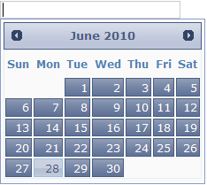

Accordion supports fourteen in-built Syncfusion themes to enhance the look and feel.
Properties
|
Name |
Description |
Type of the property |
Value it accepts |
Dependency |
|
AutoFormat |
Used to define the syncfusion themes |
enum
|
Skins.Office2007Blue, Skins.Office2007Silver, Skins.Office2007Black, Skins.Vista, Skins.Almond, Skins.Blueberry, Skins.Blend, Skins.Olive, Skins.Turquoise, Skins.Monochrome, Skins.Sandune, Skins.VS2010, Skins.Marble, Skins.Midnight |
NA |
Using Builder
The following section explains the setting of Syncfusion themes for the date picker using Builder.
1. In View, invoke the date picker helper followed by the the AutoFormat method with desired theme as argument.
|
[ASPXView[aspx]
<%=Html.Syncfusion().DatePicker("myDatPicker") .AutoFormat(Skins.VS2010)%> |
|
View[cshtml]
@{ Html.Syncfusion().DatePicker("myDatPicker") .AutoFormat(Skins.VS2010).Render();} |
2. Build and run the application.
Using Properties Model
The following section explains the setting of the Syncfusion themes for the Date Picker using the Properties model.
1. In the Controller, create an instance of the DatePickerModel, set the AutoFormat property and pass the instance through view specific data to View as shown below.
|
[Controller]
public ActionResult Index() { //create an instance of DatePickerModel DatePickerModel myModel = new DatePickerModel(); myModel.AutoFormat = Skins.VS2010;
//pass the instance through view data to the view ViewData["myDatePicker"] = myModel; return View(); }
|
2. In View, invoke the Date Picker helper with the view data key as Control ID.
|
[ASPXView[aspx]
<%=Html.Syncfusion().DatePicker("myDatePicker") %>
|
|
View[cshtml]
@{ Html.Syncfusion().DatePicker("myDatPicker").Render();} |
3. Build and run the application.
The output is shown in the following screenshot.

Figure 109: Date Picker with Syncfusion theme